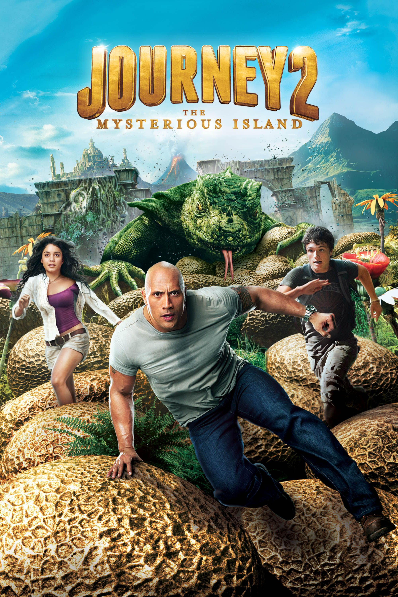
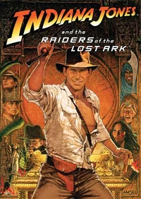
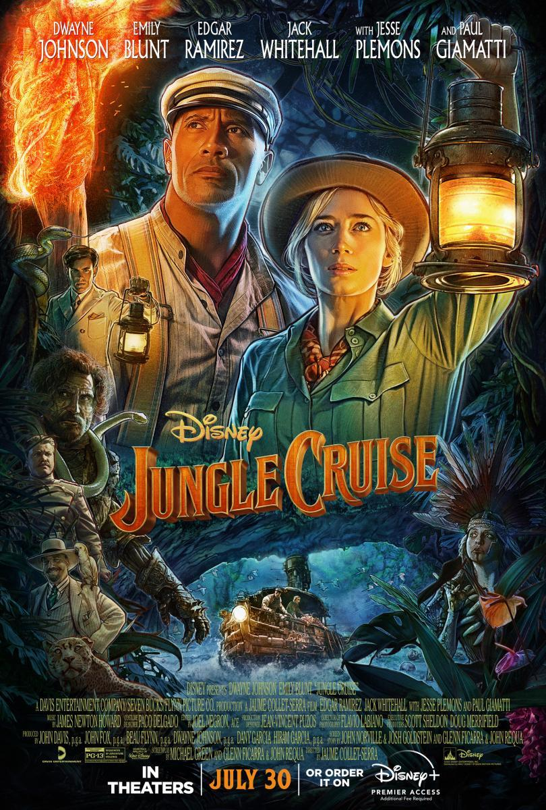

Aventura
El cine de aventuras es un género cinematográfico que refleja un mundo heroico de combates y aventuras, y en el que suele predominar la acción y valores caballerescos. Fue inventado en Italia como medio de exaltación de su pasado histórico, para posteriormente ser usado en Rusia para la exaltación de la Revolución rusa. Títulos como Raiders of the Lost Ark, primera entrega de la saga sobre Indiana Jones, dieron gran auge al género en los años 1980, aunque nunca ha tenido problemas en el campo del cine a causa de su gran aclamación por parte del público.


La aventura de Tintin
La llamada de lo salvaje
Tomb Raider



La isla misteriosa calificacion
Indiana Jones 1
Jungle Cruise